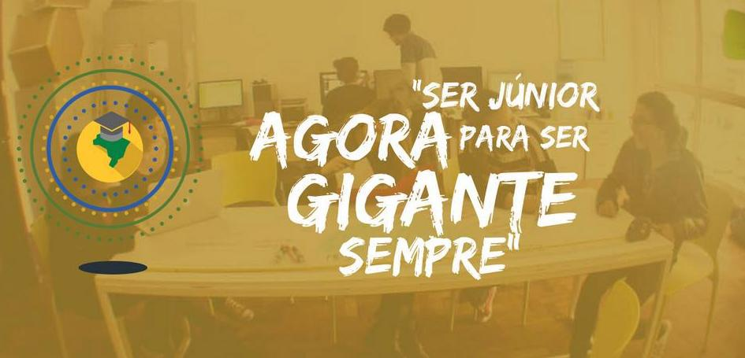
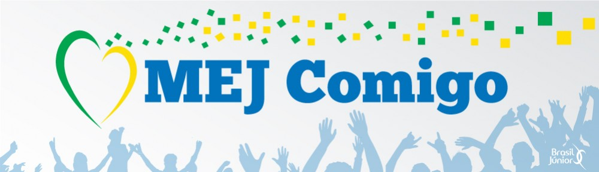

Conheça nossa equipe
Conheça nossos serviços
O movimento

Criado na frança em 1967, por alunos da Escola Superior de Ciências Econômicas e Comerciais de Paris, o Movimento Empresa Júnior (MEJ) foi resultado de um sentimento de necessidade de um grupo em criar uma associação que proporcionasse a realidade empresarial, prestando serviços de consultoria de alta qualidade e com baixo custo para o mercado. O movimento chegou ao Brasil em 1988 e, desde então, vem se transformando em um dos maiores movimentos de empreendedorismo do mundo.

Fundadas e geridas exclusivamente por estudantes universitários, as empresas juniores (EJs) transformam estudantes em empreendedores comprometidos e capazes de transformar o Brasil. Através de serviços prestados com o conhecimento adquirido nos cursos, os empresários juniores desenvolvem empresas clientes e disseminam a atitude empreendedora. Com isso, são formados profissionais cada vez mais preparados e dotados de competências como liderança, visão estratégica e experiência em gestão.
A Brasil Júnior
A Brasil Júnior (BJ) é a Confederação Brasileira de Empresas Juniores e compartilha com todos os empresários juniores o objetivo de tornar o MEJ um movimento reconhecido pelos diversos atores da sociedade por contribuir para o desenvolvimento do país por meio da formação de profissionais diferenciados. Ela é formada atualmente por 20 federações, representando 19 estados e o Distrito Federal. Agregando assim 391 empresas juniores, 11 mil empresários juniores, os quais produzem 3725 projetos ao ano.
Leia mais: brasiljunior.org.br
A RN Júnior
A Federação das Empresas Juniores do Rio Grande do Norte é recente em comparação com as outras Federações presentes no MEJ brasileiro. Fundada em 2010, a primeira gestão buscou estruturar a RN Júnior como Federação para, em seguida, na segunda gestão, focar no desenvolvimento e fomento de novas EJs que começaram a surgir no RN. O MEJ Potiguar passou por um momento de expansão do ano de 2010 até os dias atuais, culminando no surgimento de várias EJs e vários novos grupos em formação. De um cenário de duas EJs Federadas, passamos para cinco em apenas um ano, totalizando atualmente quinze EJs federadas.